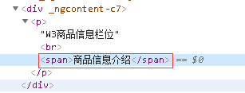

1.背景
在最近angular的项目中,需要用到[innerHTML]标签来指定一个div的样式：
1 //HTML部分
2 <div class="contents" [innerHTML]="contents"></div>
3
4 //TS部分
5 contents = '<p>商品信息栏位<br><span style="color:red;">商品信息介绍</span></p>';但是上面的样式并不起作用，在Chorme中查看源码，发现style标签的样式在Angular编译的时候被屏蔽掉。这是为什么呢？客观别急，请往下看。
2.解决方案
先说解决方案，最后再分析出现这种问题的原因。修改上面的TS：
// 在使用的页面引入DomSanitizer
import { DomSanitizer } from '@angular/platform-browser';
//构造方法里注入sanitizer对象
constructor( private sanitizer: DomSanitizer
) { }
// 对HTML代码做处理
this.contents= this.sanitizer.bypassSecurityTrustHtml("<p>W3商品信息栏位<br><span style="color:red;">商品信息介绍</span></p>");
这样虽然可以解决问题，但是这样做还不够：
基于以上两点，我们用自定义管道（pipe）来优化以上代码，使用ng generate pipe safe-html命令来生成一个pipe，并做适当的修改：
// 对safe-html.pipe.ts做适当修改
import {Pipe, PipeTransform} from '@angular/core'; import {DomSanitizer} from '@angular/platform-browser'; @Pipe({name: 'safeHtml'}) export class SafeHtmlPipe implements PipeTransform { constructor(private sanitized: DomSanitizer) { } transform(value) { return this.sanitized.bypassSecurityTrustHtml(value); } }
// 在使用innerHTML标签的属性里使用以上safeHtml管道
<div class="contents" [innerHTML]="contents|safeHtml"></div>3.原因及原理
所以，为什么会出现上面的问题呢？原来，Angular中默认将所有输入值视为不受信任。当我们通过 property，attribute，样式，类绑定或插值等方式，
将一个值从模板中插入到DOM中时，Angular会自帮我们清除和转义不受信任的值。在开头的例子中，span标签里的样式被屏蔽了，不信请看：

Angular 在编译的时候，会自动清理 HTML 输入并转义不安全的代码，因此在这种情况下，style被屏蔽，样式失效。这时候如果需要将样式片段渲染出来，
就需要用到DomSanitizer了。DomSanitizer 可以把值净化为在不同 DOM 上下文中的安全内容，来帮我们防范跨站脚本攻击（XSS）类的安全问题。
参考：https://angular.cn/api/platform-browser/DomSanitizer#description